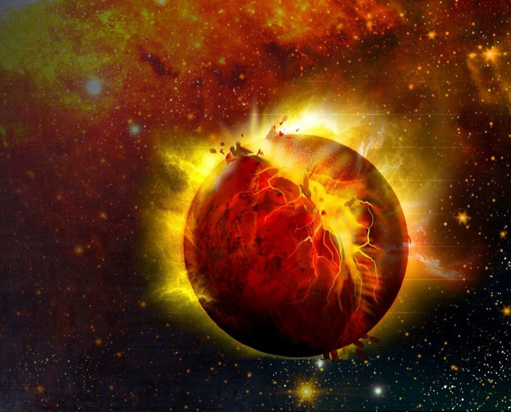

Cadia
| Cadia | |
|---|---|
| Cadia Prime, Fortress world of the Cadian Gate | |
 The death of Cadia in 999.M41, as recorded by a vessel of the evacuation fleet Artwork © Games Workshop | |
| System | Cadian System |
| Sector | Cadian Sector |
| Segmentum | Segmentum Obscurus |
| Classification | Fortress world (destroyed) |
| Ruler | Lord Castellan of Cadia (last: Ursarkar E. Creed) |
| Population | c. 850 million (before 999.M41); c. 3 million evacuated |
| Capital | None formally; Kasr Kraf was the Lord Castellan's seat |
| Tithe grade | Aptus Non (formerly) |
| Status | Destroyed 999.M41; remnants held by Chaos |
| Notable features | The Cadian Pylons; the kasr fortress-cities; the Cadian Gate |
Cadia, officially Cadia Prime, was a fortress world of the Segmentum Obscurus and for ten thousand years the most important military bastion of the Imperium of Mankind. It lay at the heart of the Cadian Gate, the only stable route out of the Eye of Terror, and was garrisoned to stop the traitor forces within the Eye from reaching the rest of the galaxy. Its people were raised as soldiers from childhood, and the Cadian Shock Troops were the most famous regiments of the Astra Militarum.[1][2]
Cadia withstood twelve Black Crusades led by Abaddon the Despoiler. In 999.M41, during the Thirteenth, Abaddon drove the Blackstone Fortress Will of Eternity into the planet, which broke apart. About three million survivors were evacuated under the Lord Castellan Ursarkar E. Creed. The destruction of Cadia was followed by the opening of the Great Rift, and the phrase "Cadia stands" has become a byword for defiance across the Imperium.[3][4]
History
[edit]Before the Imperium
[edit]The earliest Imperial record of Cadia dates to the last years of the Great Crusade, when the 1301st Expeditionary Fleet under the primarch Lorgar reached the region of the Eye of Terror. The planet was then inhabited by a primitive people with violet eyes, who worshipped the Chaos gods and spoke a tongue related to that of Lorgar's homeworld, Colchis. A priestess of these people, Ingethel, led the primarch's ship into the Eye, an episode that sealed records treat as one of the first steps of the Word Bearers towards treason. Lorgar afterwards ordered the planet bombarded, and its native population was destroyed.[5][a]
Foundation as a fortress world
[edit]After the Horus Heresy and the Great Scouring, the defeated traitor Legions fled into the Eye of Terror. The Imperium recognised that the stable passage through the warp storms around the Eye, which became known as the Cadian Gate, was the route by which they must return. Cadia and the neighbouring systems were colonised and fortified to close it. The planet's surface was covered with fortress-cities, the kasrs, and the Cadian Sector became the most heavily defended region of the galaxy outside the Sol System.[1][2]
In 781.M31 the First Black Crusade broke through the Gate. In the Imperial Fists' account, Rogal Dorn was killed in that war; the defence of Cadia was thereafter treated as the first duty of the Imperium in the Segmentum Obscurus.[5]
The Black Crusades
[edit]
For ten thousand years Cadia was the main target of the forces of Chaos. Abaddon the Despoiler led twelve Black Crusades from the Eye of Terror before 999.M41, and each was met at the Cadian Gate. In some the defenders turned the enemy back in space; in others the traitors landed on Cadia and were driven off only after years of fighting. In the Twelfth, the Gothic War, Abaddon bypassed the Gate and struck at the Gothic Sector instead. Cadia was also attacked many times by lesser warbands, by Ork raiders and by the Aeldari.[3][6]
Over these millennia Cadia raised and sent away more regiments than any other world of the Imperium. Its people came to regard their service as a calling and their planet's survival as proof of the Emperor's favour.[2]
The Thirteenth Black Crusade
[edit]In 999.M41 Abaddon launched the Thirteenth Black Crusade. The worlds of the Cadian Gate fell one after another, and the forces of Chaos landed on Cadia in strength. The Lord Castellan Ursarkar E. Creed held the planet's defence together with the help of the Adeptus Astartes, the Adepta Sororitas and the living saint Celestine. At the same time the Archmagos Dominus Belisarius Cawl, aided by the Necron collector Trazyn the Infinite, learned how to use the Cadian Pylons to drive back the Eye.[3]
Abaddon responded by bringing down the Blackstone Fortress Will of Eternity on Cadia. The impact and the destruction of the pylons broke the planet apart. Creed, Cawl, Celestine and the Inquisitor Greyfax escaped with part of the garrison through a webway gate on the ice moon of Klaisus, with the aid of the Ynnari. The full course of the battle is described in the article Fall of Cadia.[3][4]
After the fall
[edit]
The destruction of Cadia was followed within days by the opening of the Great Rift, which divided the Imperium into the Imperium Sanctus and the Imperium Nihilus. Abaddon's warfleets passed through the ruined Gate. The surviving Cadians joined the forces that gathered for the Indomitus Crusade or were scattered among the regiments of the Astra Militarum. Many Cadian regiments that had been serving elsewhere when the planet died continued to fight under the old name.[4]
In the Era Indomitus, Imperial reports state that the remnants of the Cadian System have been settled by the forces of Chaos and have become the stronghold of a renegade realm close to the Eye of Terror, which has expanded since 999.M41. Ursarkar Creed survived the fall and later returned to the field at the head of Cadian forces.[4][b]
Cadian refugees have been settled on many worlds. The Departmento Munitorum continues to raise Cadian regiments from their descendants and from those who have adopted the Cadian doctrine, and the Ecclesiarchy has made a cult of the world's memory. The phrase "Cadia stands", once the planet's motto, is now used as a battle cry, an oath and a prayer.[7][2]
Geography
[edit]
Cadia was a temperate, Terran-like world with a breathable atmosphere, wide grassy uplands, cold seas and stormy skies coloured violet by the nearby Eye of Terror. Its surface was dominated by the kasrs, great fortress-cities built for siege warfare, linked by military roads and surrounded by bunker lines, minefields and trench works. Notable kasrs included Kasr Kraf, Kasr Gallan, Kasr Myrak and Kasr Tyrok.[2][3]
The planet was dotted with thousands of black obelisks, the Cadian Pylons, which predated human settlement. Their builders and purpose were long unknown to the Imperium, though they were seen to resist the touch of the warp and were protected by Mechanicus edict. Cawl's researches in 999.M41 showed that they were made of noctilith, that they were raised by the Necrons, and that they held the Eye of Terror in check, which is why the warp storms around the Gate were calmer than elsewhere. Their destruction is believed to have contributed to the expansion of the Eye.[3][8]
The Cadian System included the ice moon of Klaisus and the worlds of the Cadian Gate, among them the fortress worlds Solar Mariatus, Kasr Partox, Kasr Holn and Kasr Sonnen. The neighbouring systems of Belis Corona and Agripinaa formed the rest of the Gate's defences.[3]

Society
[edit]Cadian society was organised for war. Every child was taught to strip and assemble a lasgun, and every adult was a soldier or a trained reservist. Children joined youth army units and fought in the field as Whiteshields before they were admitted to a regiment. Military drill, discipline and the observance of rank governed public life, and the planet's few civilian occupations were all directed towards the support of the garrison. Cadians were known for their violet eyes, a sign of their world's nearness to the Eye of Terror.[2]
Supreme authority on the planet lay with the Lord Castellan, the commander of the Cadian forces, who was answerable to the Imperium alone. The Cadian regiments were raised in great numbers and sent across the galaxy, and the Cadian Shock Troops became the model for many other regiments. The elite stormtroopers of Cadia were called the Kasrkin. Cadian doctrine taught that every soldier was expendable but that no position was to be given up without orders, and Cadian officers were valued throughout the Astra Militarum.[2][6]
The Ecclesiarchy held that the Emperor watched Cadia with particular care, and the planet's faith was austere and martial. The phrase "Cadia stands" was used as a greeting, an oath and a toast. Since the fall, Cadian survivors and their descendants have preserved the old customs, including the presentation of a lasgun to every child, on the worlds where they have been settled.[7][2]
Legacy
[edit]Cadia's fall is regarded by the Imperium as the greatest military defeat since the Horus Heresy, and the beginning of the age of darkness that followed. To the soldiers of the Astra Militarum it is also the supreme example of endurance, since the planet did not surrender and was not taken in battle. Shrines to the fallen of Cadia have been raised on many worlds, and the regiments that still bear the Cadian name fight in every theatre of the Era Indomitus.[4][7]
Timeline
[edit]| Date | Event |
|---|---|
| Age of Strife | A branch of Humanity settles Cadia and later turns to the worship of the Chaos Gods.[c] |
| c. 965.M30 | Cadia's population is a primitive people who worship the four Chaos Gods, some forty years before the Horus Heresy.[d] |
| Early M32 | Imperial colonists resettle Cadia as the Imperium fortifies it against the Black Crusades.[e] |
| 781.M31 | Abaddon the Despoiler's First Black Crusade and the First Battle of Cadia; the world is declared vital to the defence of the Imperium. |
| Early M32 to M41 | The Cadian Gate is held by the Cadian Pylons and the Cadian Shock Troops of the Astra Militarum against the Chaos incursions of later Black Crusades.[f] |
| 999.M41 | The Thirteenth Black Crusade reaches Cadia; Urkanthos leads the assault on Kasr Kraf. |
| 999.M41 | Belisarius Cawl and Trazyn the Infinite learn the function of the Cadian Pylons, but the pylons fail as Chaos wins the day. |
| 999.M41 | The Fall of Cadia: the Cadian Gate fails, the Eye of Terror expands, and the Cicatrix Maledictum consumes the planet. |
| 999.M41 | Saint Celestine arrives to lead the defence; the Celestinian Crusade forms at Macragge and the Great Rift opens. |
| Early M42 | Cadia lies within the Cicatrix Maledictum and is cut off from the Imperium; no fleet has returned. |
See also
[edit]
Notes
[edit]- ^ These events are recorded only in sealed Inquisitorial and Custodian sources and were unknown to the planet's later inhabitants. The Cadian Shock Troops' tradition holds that the world was empty when it was first garrisoned.
- ^ Records of Creed's activities after the fall are fragmentary, and several sources treat them as classified by order of the Lord Commander.
- ^ Estimated; no record gives an exact year.
- ^ Estimated; no record gives an exact year.
- ^ Estimated; no record gives an exact year.
- ^ Estimated; no record gives an exact year.
References
[edit]- ^ a b Codex: Astra Militarum (9th Edition), pp. 12, 19. Games Workshop. Warhammer 40,000: Core Book (9th Edition), pg. 19. Games Workshop.
- ^ a b c d e f g h Hill, Justin D.. Cadia Stands (novel). Black Library, Part 4, Chs. 2-8. Codex: Adeptus Custodes (8th Edition), pg. 33. Games Workshop.
- ^ a b c d e f g Warhammer 40,000: Rulebook (8th Edition), pg. 161. Games Workshop. Dembski-Bowden, Aaron. The First Heretic (novel). Black Library.
- ^ a b c d e The Gathering Storm - Part One - Fall of Cadia (7th Edition), pp. 10, 68-88. Games Workshop. Codex: Chaos Space Marines (6th Edition), pp. 20, 25, 57. Games Workshop.
- ^ a b Codex: Chaos Space Marines (5th Edition), pg. 46. Games Workshop. Codex: Imperial Guard (5th Edition), pp. 14, 57. Games Workshop.
- ^ a b Codex: Chaos Space Marines (3rd Edition, Revised Codex), pp. 8, 81. Games Workshop. Codex: Eye of Terror (3rd Edition), pp. 5, 11, 24, 37. Games Workshop.
- ^ a b c Codex: Imperial Guard (2nd Edition), pg. 11. Games Workshop. Hoare, Andy. The 13th Black Crusade (Background Book). Black Library.
- ^ White Dwarf 182 (UK), "Cadian Shock Troops: Imperial Guard," by Rick Priestley. [http://redelf.narod.ru/w40k/w40k_eyeofterror.html Eye of Terror Worldwide Campaign - Newletters].